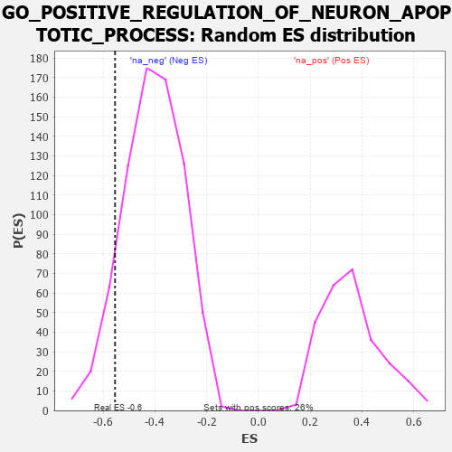

| | | Dataset | 7d |
| Phenotype | NoPhenotypeAvailable |
| Upregulated in class | na_neg |
| GeneSet | GO_POSITIVE_REGULATION_OF_NEURON_APOPTOTIC_PROCESS |
| Enrichment Score (ES) | -0.55370176 |
| Normalized Enrichment Score (NES) | -1.3578128 |
| Nominal p-value | 0.10054348 |
| FDR q-value | 0.39352313 |
| FWER p-Value | 1.0 |
Table: GSEA Results Summary
 Fig 1: Enrichment plot: GO_POSITIVE_REGULATION_OF_NEURON_APOPTOTIC_PROCESS
Fig 1: Enrichment plot: GO_POSITIVE_REGULATION_OF_NEURON_APOPTOTIC_PROCESS
Profile of the Running ES Score & Positions of GeneSet Members on the Rank Ordered List
| PROBE | GENE SYMBOL | GENE_TITLE | RANK IN GENE LIST | RANK METRIC SCORE | RUNNING ES | CORE ENRICHMENT | | 1 | GSK3A | | | 351 | 0.745 | 0.0155 | No |
| 2 | BAX | | | 387 | 0.711 | 0.0680 | No |
| 3 | PITX3 | | | 594 | 0.596 | 0.0898 | No |
| 4 | AIFM1 | | | 1072 | 0.469 | 0.0674 | No |
| 5 | BACE1 | | | 1673 | 0.360 | 0.0208 | No |
| 6 | PAK3 | | | 1889 | 0.322 | 0.0195 | No |
| 7 | CDK5 | | | 3480 | 0.080 | -0.1740 | No |
| 8 | PIN1 | | | 3543 | 0.069 | -0.1763 | No |
| 9 | FIS1 | | | 3654 | 0.051 | -0.1861 | No |
| 10 | NF1 | | | 3713 | 0.040 | -0.1902 | No |
| 11 | SRPK2 | | | 4790 | -0.155 | -0.3130 | No |
| 12 | FBXW7 | | | 4816 | -0.161 | -0.3032 | No |
| 13 | ATM | | | 5210 | -0.249 | -0.3327 | No |
| 14 | CDC42 | | | 6236 | -0.548 | -0.4177 | No |
| 15 | GRN | | | 7319 | -1.194 | -0.4581 | Yes |
| 16 | CASP2 | | | 7442 | -1.322 | -0.3676 | Yes |
| 17 | GRIK2 | | | 7552 | -1.471 | -0.2635 | Yes |
| 18 | CASP3 | | | 7747 | -1.902 | -0.1356 | Yes |
| 19 | GRIK5 | | | 7792 | -2.044 | 0.0225 | Yes |
Table: GSEA details [plain text format]

Fig 2: GO_POSITIVE_REGULATION_OF_NEURON_APOPTOTIC_PROCESS: Random ES distribution
Gene set null distribution of ES for GO_POSITIVE_REGULATION_OF_NEURON_APOPTOTIC_PROCESS